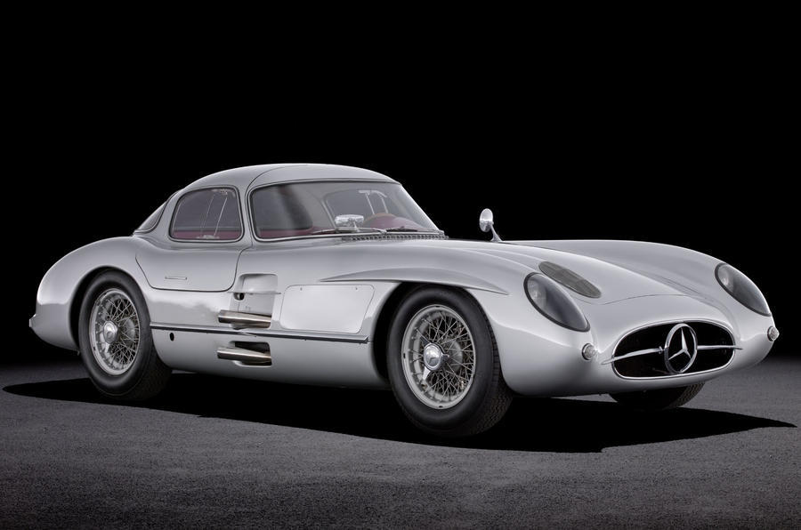
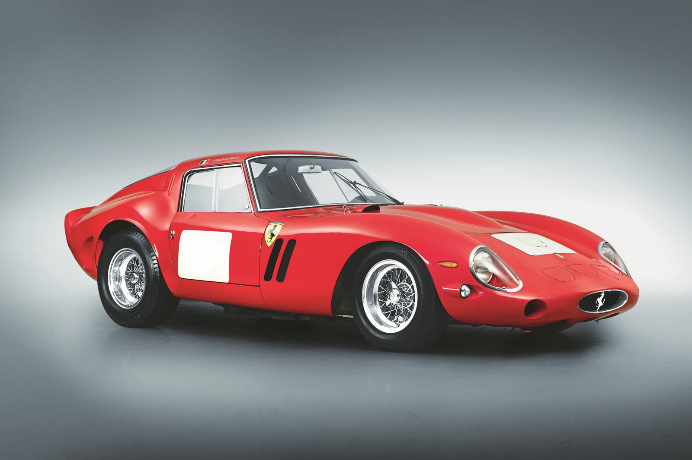

Mercedes-Benz 300 SLR Uhlenhaut Coupe
Status: Active
Description: A 1955 Mercedes-Benz 300 SLR Uhlenhaut Coupe became the most expensive car ever sold in 2022, having sold at auction for an eye-watering €135 million - the equivalent of £114.4 million.
დეტალების ნახვა

Ferrari 250 GTO
Status: Inactive
Description: It will come as little surprise to many of you the most expensive car ever sold at auction to date is a Ferrari 250 GTO, although this example is merely second in the overall rankings. No other car in the world has earned such a reputation and mystique, much of that built on previous record-smashing auction results.
დეტალების ნახვა